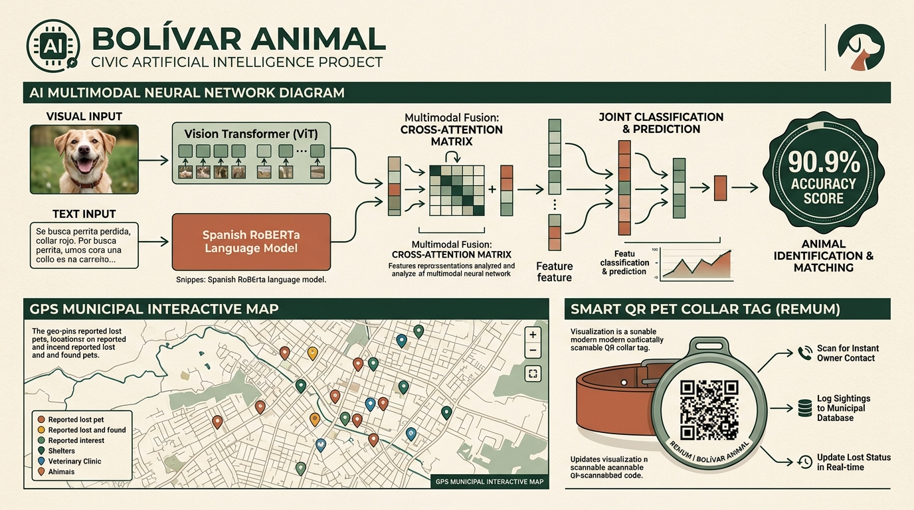

Transformación de reportes ciudadanos no estructurados en información accionable, georreferenciada y priorizada mediante fusión de Vision Transformer (ViT), RoBERTa-BNE y Cross-Attention en San Carlos de Bolívar.

Transformador visual que divide la imagen (224x224 px) en parches de 16x16, extrayendo características morfológicas, razas, estado físico y entorno.
Modelo de lenguaje especializado en español (PlanTL / BSC). Interpreta la semántica de urgencia, pérdida, colores y avistamientos descritos por el vecino.
En lugar de una simple concatenación rígida de vectores, el texto actúa como Query y la imagen actúa como Key / Value a través de 8 cabezas de atención. Esto permite que el modelo "busque en la imagen lo que el usuario describe en el texto" (ej: relacionar "tiene collar rojo" con el área del cuello del canino).
| Etiqueta Oficial | Prioridad | Tipo Operativo | Respuesta del Sistema & Protocolo |
|---|---|---|---|
animal_perdido |
Media | Búsqueda Activa | Activa alerta en el mapa, habilita cotejo visual automático con rescates y genera ficha de búsqueda compartible. |
animal_encontrado |
Media | En Resguardo | Registra al animal en tránsito y notifica a personas buscando mascotas similares por cercanía GPS. |
animal_suelto |
Media | Vía Pública | Registra avistamiento sin tutor en la vía pública para monitoreo de cuadrante vecinal. |
animal_en_riesgo |
Alta | Peligro Inminente | Alerta prioritaria en mesa operativa: animales atrapados, en autopistas o en zanjas profundas. |
posible_animal_herido |
Alta | Urgencia Veterinaria | Marcado de alta prioridad para rescate de urgencia y articulación con guardia veterinaria o refugio. |
abandono |
Alta | Alerta Social | Notificación prioritaria de cajas o camadas abandonadas en descampados o vía pública. |
Sistema de trazabilidad animal municipal con chapita QR física y ficha clínica digital.
Plano interactivo en tiempo real centrado en San Carlos de Bolívar con filtrado por capas.
Gestión integral del ciclo de vida del incidente desde la recepción hasta la resolución.
| Dimensión | Redes Sociales (Facebook / WhatsApp) | Bolívar Animal (Red Cívica Inteligente) |
|---|---|---|
| Estructura | Posteos informales, quejas desordenadas, sin datos obligatorios. | Formulario guiado con clasificación y análisis multimodal automático. |
| Localización | Referencias vagas ("por el parque"), sin georreferenciación. | Coordenadas GPS exactas reflejadas en tiempo real sobre el mapa urbano. |
| Priorización | Dependiente del algoritmo de atención o cantidad de comentarios. | Automática según criticidad de la situación (Heridos/Riesgo = Alta). |
| Cotejo de Casos | Desconexión total entre quien perdió una mascota y quien la encontró. | Cotejo visual con vectores densos de 768d y cruce de avistamientos. |
| Trazabilidad | Los posteos quedan desactualizados y nadie sabe si el animal apareció. | Ciclo de vida formal con estado RESUELTO y confirmación del tutor. |